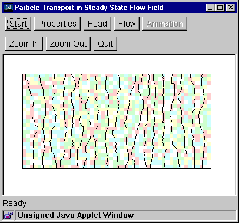

Step 3: Head
This step computes hydraulic head in the model domain.
- Click the "Head" button to bring up the Head Dialog Box.
- Select the number of contour intervals to be drawn. (Contours are equally
spaced between the highest and the lowest head.)
- Click "Compute" to start model computation.
Computational time varies among machines and web browsers. When computation
is finished, head contours are displayed.

Go to Step 4a (Flow paths)
Go to Step 4b (Fluid particles)
Back to Step 2
Return to Introduction
|